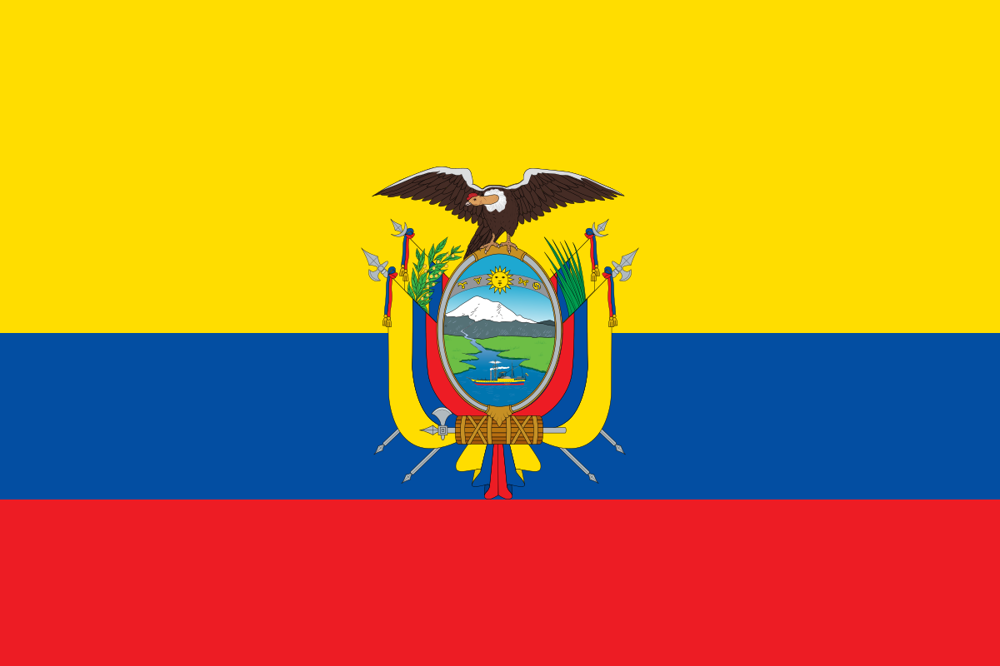

Bienvenido
Ecuador está ubicado sobre la línea ecuatorial, en América del Sur, por lo cual su territorio se encuentra en ambos hemisferios. Limita al norte con Colombia y al sur y al este con Perú.
Comida Tipica de ecuador
Esta es La comida tipica de nuestro pais
| Desayuno | Almuerzo |
|---|---|
| Bolon | Bistec |
| Encebollado | Yapingallo |
Deportes
Contenido de la seccion de deportes de Ecuador
| Deportes |
|---|
| Futbol |
| Ecuavoli |
| Padel |
Acerca de
Datos interesantes sobre mi pais
- Su nombre viene de la línea del Ecuador, que atraviesa el país.
- Ecuador es reconocido por tener el mejor cacao fino de aroma del planeta.
- El Año Viejo, donde se queman monigotes para despedir el año.